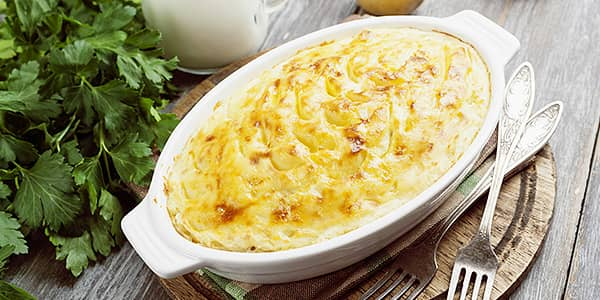

РЕЦЕПТИ
Перші страви
Капусняк зі сметаною

Коли на плиті кипить капусняк, поживний обід для всієї родини гарантовано!На м’ясному бульйоні, з пшоном та шкварками, приправлений сметаною та свіжою зеленню — капусняк варили ще запорозькі козаки. А не дарма — тарілка цієї ароматної густої страви дарує відчуття ситості на довгі години.За смаком та наваристістю капусняк не поступається борщу, проте має свої особливості. Готують такий суп виключно з квашеної капусти, яку віджимають від розсолу та дрібно шинкують. А от картоплю часто варять цілою, після чого прямо в каструлі розминають товкачем. Для бульйону вибирають жирну свинину або телятину. А якщо хочуть приготувати пісний капусняк, варять юшку з грибів та додають олію.
ІНГРЕДІЄНТИ
- Свинина 300 г
- Квашена капуста 250 г
- Картопля 4шт.
- Морква 1 шт.
- Цибуля ріпчаста 2 шт.
- Пшоно ½ склянки
- Томатна паста 2 ст. л.
- Сметана ТМ «Рудь» 100 г
- Рослинна олія для смаження
- Лавровий лист 3 шт
- Сіль, перець за смаком
- Кріп, петрушка за смаком
ПРИГОТУВАННЯ
- М’ясо нарізаємо чималими шматочками та опускаємо в каструлю з холодною водою. Доводимо до кипіння, знімаємо піну, варимо на маленькому вогні протягом 40 хвилин.
- Промиваємо пшоно, додаємо до бульйону. Варимо ще 10 хвилин.
- Чистимо та миємо овочі. Картоплю нарізаємо невеликими кубиками та викладаємо в каструлю — до бульйону з пшоном. Варимо до готовності картоплі.
- Квашену капусту віджимаємо від розсолу й дрібно шинкуємо. Кидаємо в бульйон разом із лавровим листом. Солимо, перчимо. Варимо на слабкому вогні ще 15 хвилин.
- Моркву натираємо на тертці, цибулю нарізаємо маленькими шматочками, подрібнюємо часник. Смажимо овочі на розігрітій сковороді з олією.
- Додаємо томатну пасту й трохи води. Тушкуємо овочі п’ять хвилин і додаємо до вмісту каструлі. Перемішуємо.
- Посипаємо суп дрібно нарізаною зеленню та доводимо до кипіння. Знімаємо каструлю з вогню, даємо страві настоятися 20–30 хвилин.
- Теплий суп розливаємо по тарілках та додаємо сметанку.
Класична лазанья з м'ясом

Лазанья — це традиційна страва італійської кухні, що має безліч варіацій. Начинку для лазаньї готують з м’ясного фаршу, морепродуктів, овочів, шпинату. А ми пропонуємо спробувати класичний рецепт лазаньї болоньєзе, яку полюбляють гурмани по всьому світу.
М’ясна лазанья вважається візитівкою італійської гастрономічної культури. Соковитий соус болоньєзе, ніжний вершковий бешамель, пружна паста аль денте, пікантний пармезан — відчуйте смак справжньої Італії на власній кухні!
ІНГРЕДІЄНТИ
-
Основні
- Листи для лазаньї 12 шт.
- Пармезан 200 г
-
Для соусу болоньєзе:
- Фарш 500 г
- Помідори 3 шт.
- Цибуля 1 шт.
- Часник 2 зубчики
- Томатний соус 3 ст. л.
- Олія оливкова 4 ст. л.
- Петрушка пучок
- Сіль за смаком
- Перець за смаком
-
Для соусу бешамель:
- Молоко ТМ «Рудь», 2,5 % 800 мл
- Масло вершкове «Хуторок селянський» ТМ «Рудь», 73 % 100 г
- Борошно 3 ст. л.
- Мускатний горіх ¼ ч. л.
- Сіль за смаком
- Перець за смаком
ПРИГОТУВАННЯ
- Готуємо соус болоньєзе. Чистимо цибулю, дрібно нарізаємо та обсмажуємо на оливковій олії. До неї додаємо фарш, часник, сіль та перець. Смажимо до готовності 15 хвилин. Бланшируємо помідори, нарізаємо невеликими шматочками та додаємо до готового фаршу. Туди ж виливаємо томатний соус. Гарно перемішуємо інгредієнти, накриваємо кришкою та тушкуємо протягом 20 хвилин. Знімаємо з вогню та додаємо дрібно нарізану зелень.
- Для приготування соусу бешамель знадобиться сотейник з товстим дном. Ставимо його на вогонь, розтоплюємо вершкове масло, додаємо муку. Ретельно перемішуємо інгредієнти. Поступово вливаємо молоко, не забуваємо постійно мішати соус. Додаємо сіль, перець, мускатний горіх. Доводимо його до кипіння, знімаємо з вогню. Соус повинен мати консистенцію рідкої сметани. Варто пам’ятати, що при охолодженні він стане густішим.
- У кип’ячій воді відварюємо листи лазаньї. Достатньо проварити їх 2‒3 хвилини, а потім просушити паперовим рушником. Одночасно в каструлі має бути не більше двох листів, адже вони можуть злипнутися.
- Беремо форму для запікання (у нашому випадку розміром 20x20 см), на дно виливаємо невелику кількість соусу бешамель. Зверху викладаємо листи лазаньї, на них — соус болоньєзе, потім соус бешамель. Таким чином робимо 5‒6 шарів. Верхні листи змащуємо соусом бешамель і посипаємо дрібно натертим пармезаном.
- Розігріваємо духовку до 180 градусів. Запікаємо страву 30‒40 хвилин. Готову лазанью виймаємо з духової шафи та залишаємо при кімнатній температурі на 10 хвилин. За цей час соуси застигнуть, і лазанью легко можна буде розрізати на шматочки.
Другі страви
Картопляна запіканка з фаршем та грибами
Для картопляної запіканки найкраще підходить фарш зі свинини або яловичини. Картоплю обирайте тих сортів, які добре розварюються, але гарно тримають форму при приготуванні. Для утворення красивої рум’яної скоринки візьміть твердий або напівтвердий сир: пармезан, голландський, чедер, гауда тощо.
ІНГРЕДІЄНТИ
- Картопля 500 г
- Овочі з грибами «Преміум» 200 г
- Морква 200 г
- Цибуля 2 шт.
- Вершки 100 г
- Сметана ТМ «Рудь» 100 г
- Сир пармезан 200 г
- Сметана ТМ «Рудь» 100 г
- Вершкове масло «Хуторок селянський», 73 % 50 г
- Лавровий лист 3 шт
- Сіль, перець за смаком
- Кріп, петрушка за смаком
ПРИГОТУВАННЯ
- Чистимо картоплю, нарізаємо тонкими кружальцями. Подрібнюємо цибулю, на грубій тертці натираємо моркву та сир.
- До м'ясного фаршу додаємо базилік, паприку, сіль, перець, а також вершки. Вимішуємо.
- Суміш овочів та грибів «Преміум» підсмажуємо на рослинній олії з половиною цибулі до золотистого кольору.
- Решту цибулі разом із морквою пасеруємо на олії протягом п'яти хвилин. Додаємо ложку сметани, солимо, перемішуємо. Накриваємо кришкою й тушкуємо протягом трьох хвилин на середньому вогні.
- Змащуємо форму для випікання рослинною олією й викладаємо інгредієнти шарами. На дно викладаємо половину картоплі. Потім — м'ясний фарш. Далі — суміш овочів та грибів. Наступний шар — моркв'яний. Зверху викладаємо решту картоплі.
- Перемішуємо сметану, вершки та натертий сир. Заливаємо страву.
- Ставимо наповнену форму в розігріту до 200 °С духовку та запікаємо протягом 40–50 хвилин до утворення рум'яної скоринки.
Курячі гомілки в сметанному соусі
Курячі гомілки в сметані чудово поєднуються з картопляним пюре, гречаною кашею чи овочевим рагу. Перед подачею обов’язково посипте страву подрібненою зеленню. Так і ще смачніше!
Завдяки тушкуванню в ароматній суміші сметани, гірчиці та спецій м’ясо виходить м’яким і дуже ніжним. Якщо ж додасте до маринаду трохи меду, карі та часник, отримаєте страву з багатим пряним смаком і красивою рум’яною шкіркою.
ІНГРЕДІЄНТИ
- Курячі гомілки 8 шт.
- Сметана ТМ «Рудь», 21 % 250 г
- Часник 2 зубчики
- Лимон 1 шт.
- Петрушка пучок
- Гірчиця 1 ст. л
- Рослинна олія 20 г
ПРИГОТУВАННЯ
- Миємо курячі гомілки, даємо зайвій рідині стекти. Викладаємо гомілки в глибоку ємність
- В окремій посудині готуємо соус. До сметани додаємо сік лимона, гірчицю, подрібнену петрушку, пропущений через прес часник, сіль і спеції: карі, куркуму та перець. Всі інгредієнти ретельно перемішуємо.
- Заливаємо гомілки сметанним соусом, перемішуємо.
- Форму для запікання змащуємо рослинною олією, викладаємо гомілки разом із соусом.
- Розігріваємо духовку до 180 °C та запікаємо м’ясо протягом 50 хвилин — до золотистого кольору.
Салати та закуски
Листковий салат із шампіньйонами, КУРЯТИНОЮ ТА СИРОМ
Додайте ноток свята буденному столу — приготуйте ніжний листковий салат із грибами та сиром.
Рецепт цієї апетитної страви прийшов до нас із австрійської кухні. Завдяки поєднанню смажених грибів, солінь і копченостей салат — надзвичайно пряний та ситний. А ще він дуже нагадує торт, адже складається з багатьох шарів та вкритий повітряною сирною шубкою, схожою на кокосову стружку.
Щоб грибний салат мав привабливий вигляд на тарілці, рекомендуємо формувати його за допомогою кулінарного кільця, а на довершення — прикрасити гілочкою свіжої зелені. Смакують такий салат самостійно або як доповнення до основної страви.
ІНГРЕДІЄНТИ
- Копчена куряча грудка 200 г
- Шампіньйони різані ТМ «Рудь» 300 г
- Огірки мариновані 150 г
- Яйця варені 4 шт.
- Картопля 3 шт.
- Морква 2 шт.
- Цибуля ріпчаста 1 шт.
- Сир твердий 150 г
- Йогурт «Для салату» ТМ «Рудь» 5 ст. л.
- Сіль, перець за смаком
- Рослинна олія для смаження
- Петрушка свіжа гілочка
- Шампіньйони мариновані для прикрашання
ПРИГОТУВАННЯ
- Відварюємо картоплю, моркву та яйця. Очищуємо, натираємо на грубій тертці. Цибулю звільняємо від лушпиння та дрібно нарізаємо.
- На розігріту з олією сковороду викладаємо шампіньйони. Солимо, перчимо, додаємо подрібнену цибулю та смажимо до золотистого кольору. Залишаємо охолоджуватися.
- Мариновані огірки та копчену курячу грудку нарізаємо невеличкими шматочками.
- У кулінарному кільці викладаємо шарами: картоплю, мариновані огірки, шампіньйони, курячу грудку, моркву та яйця. Кожен шар змащуємо йогуртом «Для салату».
- Натираємо сир та посипаємо салат. Ставимо на годину в холодильник.
- Звільняємо салат від форми. Прикрашаємо маринованими шампіньйонами та зеленню.
Салат з риби "Роксолана"
Салат з риби "Роксолана" відмінно підходить в якості закуски на будь-який випадок! Цей ніжний рибний салат підкорив вже чимало господарочок. Ще б пак! Адже рецепт цього смачного салату з рибою дуже простий на ділі, а смак його дуже багатогранний! Ой, аж у самого слинки потекли ...
Салат з риби "Роксолана" відмінно підходить в якості закуски на будь-який випадок!
ІНГРЕДІЄНТИ
- Суміш «Весняна» семикомпонентна ТМ «Рудь» 400 г
- Будь-яка жирна риба (морський язик, лосось і т. п.) 300 г
- Майонез 3—4 ст. л.
- Олія для смаження
- Сіль, перець та прянощі за смаком
- Помідори та зелень петрушки (для прикрашання страви) за смаком
ПРИГОТУВАННЯ
Суміш, не розморожуючи, смажити на розігрітій олії 8—10 хв, посолити і приправити за смаком. Рибу відварити у підсоленій воді, прохолодити, порізати шматочками, викласти на тарілку або в салатник, змастити майонезом а зверху викласти смажені овочі. Салат прикрасити помідорами та зеленню і подавати охолодженим.